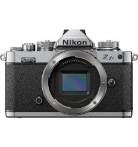
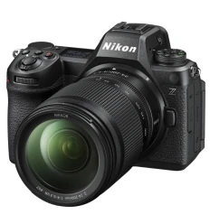
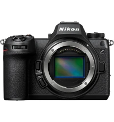
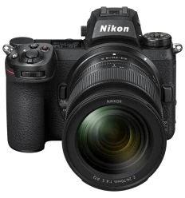
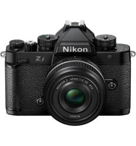

NIKON Z fc Cuerpo
La Nikon Z fc es una cámara mirrorless que combina lo mejor del estilo retro con la tecnología moderna. Inspirada en el icónico diseño de la Nikon FM2, esta cámara es ligera y está equipada con un sensor APS-C de 20.9 MP, grabación de vídeo en 4K y conectividad Wi-Fi/Bluetooth. Es perfecta para los amantes de la fotografía que buscan un equipo con estilo y a la vez prestaciones avanzadas.

NIKON Z50II + 16-50mm f 3,5-6,3 VR
La última incorporación a la serie Z de cámaras mirrorless con formato DX y tamaño APS-C. Esta cámara compacta y ligera combina la avanzada tecnología de los modelos superiores con una facilidad de uso excepcional, convirtiéndola en una herramienta versátil y poderosa para los creadores de contenido.

NIKON Z6 III + 24-200mm
El Kit Nikon con objetivo 24-200mm f/4-6.3 VR reúne la potencia de un sensor de 24,5MP con procesador EXPEED 7 y vídeo 6K, junto a un zoom todoterreno estabilizado. Una solución flexible para fotografía y vídeo profesional.

NIKON Z6 III
Nikon Z6 III combina velocidad, precisión y calidad de imagen en un cuerpo híbrido con sensor parcialmente apilado. Ideal para foto y vídeo profesional, graba en 6K RAW, enfoca con inteligencia artificial y ofrece una pantalla articulada de altísima resolución.

NIKON Z7 II + 24-70mm F4
Nikon Z7II con objetivo NIKKOR Z 24-70mm f/4 S, un kit potente y versátil para fotografía y vídeo profesional. Sensor FX de 45,7 MP, doble procesador EXPEED 6, grabación 4K, y objetivo ligero y nítido con enfoque interno y revestimiento de nanocristal.

NIKON Zf + 40mm
El Kit Nikon Z F con objetivo 40mm f/2 une un cuerpo de estilo clásico con un sensor de 24,5MP y procesador EXPEED 7, junto a una óptica compacta y luminosa perfecta para retratos, fotografía urbana y viajes.